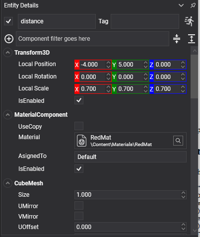

Distance Constraint
A distance constraint keeps two points a certain distance apart, or between two distances. It is the rope, the rod and the spring, depending on how its limits and its spring are set.
This constraint had no equivalent in the previous API; it was previously approximated with a generic six-degree-of-freedom joint.
| Set as | Behaviour |
|---|---|
MinDistance = 0, MaxDistance = L |
A rope. It stops the bodies drifting further than L apart and does nothing when they are closer. |
MinDistance = MaxDistance = L |
A rigid rod. The bodies stay exactly L apart, pushed as well as pulled. |
Either, plus LimitsSpring |
A spring. The limit becomes soft: the bodies can go past it and are pulled back. |
DistanceConstraint Component

Entity load = new Entity("load")
.AddComponent(new Transform3D() { Position = new Vector3(0f, 2f, 0f) })
.AddComponent(new RigidBody())
.AddComponent(new BoxCollider())
.AddComponent(new DistanceConstraint()
{
ConnectedEntityPath = "crane",
MinDistance = 0f, // A rope: it may swing closer...
MaxDistance = 3f, // ...but never hang lower than three metres.
});
this.Managers.EntityManager.Add(load);
Properties
| Property | Default | Description |
|---|---|---|
| MinDistance | -1 | The closest the two anchors may be, in metres. A negative value means "the distance they are at when the constraint is created", so a rod built in place needs no measuring. |
| MaxDistance | -1 | The furthest they may be. Negative means the same. |
| LimitsSpring | hard | Makes the limits soft. See Springs. A frequency of 0, which is the default, means a hard limit. |
| CurrentDistance | read-only | How far apart the anchors are right now. |
Plus the common properties.
Note
Both distances default to -1, which means "however far apart they happen to be". Dropping a DistanceConstraint onto two bodies with nothing else set therefore gives a rigid rod holding them exactly where they were.
Using Distance Constraint
A winch
public class Winch : Behavior
{
[BindComponent]
private DistanceConstraint cable = null;
public float Speed { get; set; } = 1.5f;
public float ShortestLength { get; set; } = 0.5f;
public float LongestLength { get; set; } = 8f;
protected override void Update(TimeSpan gameTime)
{
float input = this.ReadWinchInput();
if (input == 0f)
{
return;
}
float length = MathHelper.Clamp(
this.cable.MaxDistance + (input * this.Speed * (float)gameTime.TotalSeconds),
this.ShortestLength,
this.LongestLength);
// Only the maximum moves. The minimum stays at zero so the load may still swing in towards the
// winch; driving both would make the cable a rigid rod that shoves as well as pulls.
this.cable.MaxDistance = length;
}
}
A spring
DistanceConstraint spring = entity.FindComponent<DistanceConstraint>();
spring.MinDistance = 1f;
spring.MaxDistance = 1f;
// Both limits at the same place and a soft spring on them: the body is pulled towards one metre
// from the anchor and bounces about it rather than being locked there.
spring.LimitsSpring = SpringParameters.FromFrequency(1.5f, 0.4f);
Tip
A rope made of one distance constraint does not drape: it is a straight line between two points that happens to have a maximum length. For a rope that hangs in a curve, chain several bodies together with point constraints instead.